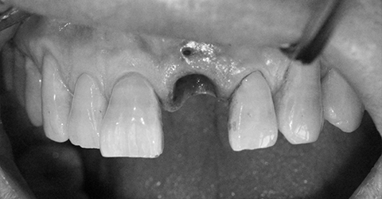

발치 즉시 임플란트
발치즉시 임플란트란?
일반적인 임플란트는 발치한 이후 3개월 가량 지나고 식립합니다.
그러나 최근에는 발치와 동시에 뼈이식을 동반하여 임플란트를 식립하는 발치 즉시 임플란트를 시행하는 경우가 많습니다.
시간이 지나 뼈가 흡수되어 임플란트 하기가 안 좋아지는 경우를 방지하고, 임플란트 진행 기간을 줄일 수 있는 장점이 있습니다.
Nowon Yonseirian Dental Clinic
발치 즉시 임플란트
Immediate Implant Placement following Extraction
치아를 뽑으면서 바로 임플란트를 식립하여 수술 횟수와 기간을 단축시킵니다.
뼈가 얇은 앞니의 경우, 시간이 지나면 뼈가 많이 흡수되기 때문에 발치 즉시 임플란트를 많이 시행합니다.
Before
After
01

02
03
04
05
06